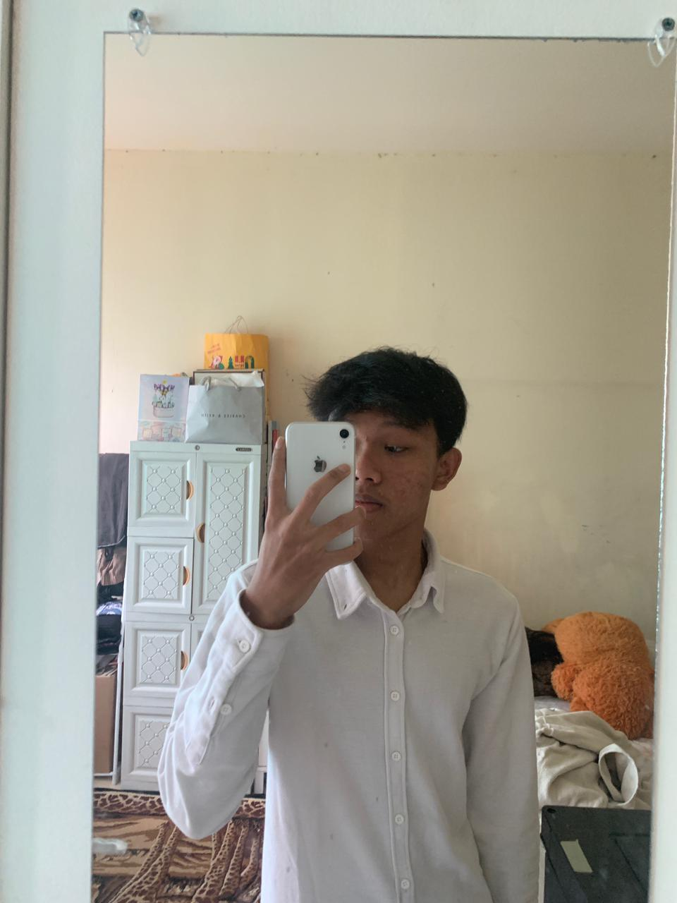
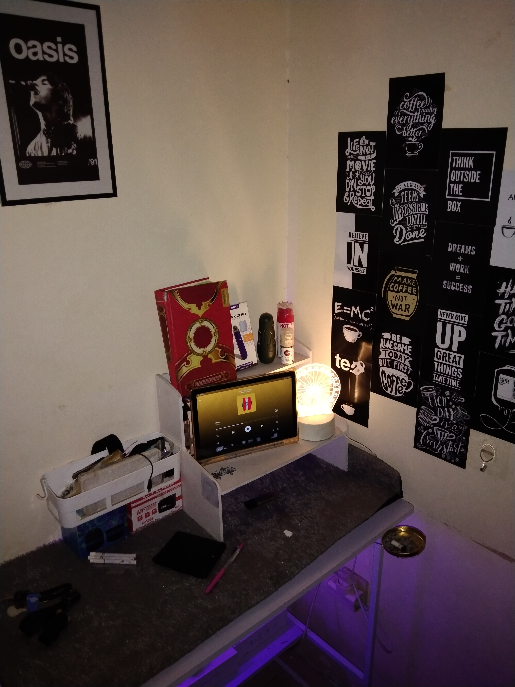

Halo, Saya Ahmad Zaky
Trade Like A StarMensinergikan presisi analisis Price Action untuk pertumbuhan portofolio yang stabil dan berkelanjutan.

Ahmad Zaky
Pro Trader
Supply & Demand
Price Action Specialist
Trade Like A Star★
Halo! Saya Ahmad Zaky. Sebagai seorang spesialis dalam dunia trading, saya mendedikasikan diri untuk memahami dinamika pasar secara mendalam. Saya percaya bahwa kesuksesan finansial bermula dari kombinasi antara strategi yang tajam dan mentalitas yang tenang.
"Mensinergikan presisi analisis Price Action dengan disiplin manajemen risiko yang ketat untuk mengorkestrasi pertumbuhan portofolio yang stabil dan berkelanjutan bagi masa depan."

Trading Setup
High-precision price action analysis with systematic entry points.

Market Analysis
Deep understanding of supply and demand market cycles.